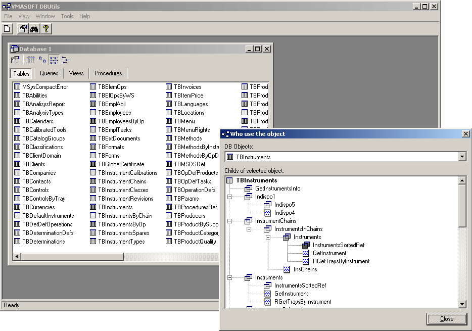

VMASOFT DBUtils
Access developers companion!

DBUtils was designed having in mind Microsoft Access (and Jet) programmers. The tool is useful to any person interested in developing large application based on Microsoft Access Database Engine (.MDB files). This software can also be used by persons interested in opening .MDB files without having to buy the more expensive Microsoft Access application.
Features:
- View Microsoft Access database properties
- View tables, views and queries
- View structure of tables
- View, using a colored syntax editor, the SQL behind views and stored procedures
- View the data from tables and views
- View the source code of application associated with the database
- Perform searches in database structures and source code files
- View object dependencies: parents and child of tables, views, stored procedures
- Compatible with MS Access 97, 2000+ databases
- Easy to use - GUI is similar to Microsoft Access application
Software requirements:
- Microsoft Windows 98, 2000, XP operating system
- Microsoft Data Access Components (MDAC). Download latest version from: http://download.microsoft.com